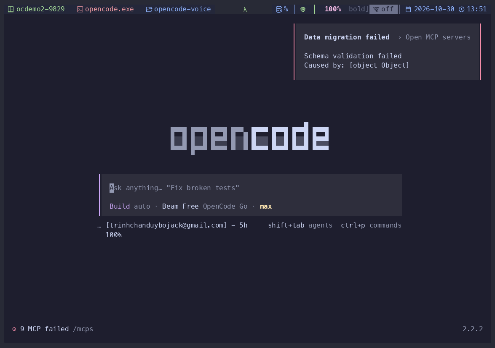

code-aware tts
Piper, Chatterbox, or VieNeu. Per-sentence language routing. LLM summarizes code, diagrams, tables into speakable prose.
Dictate prompts with local whisper. Hear responses spoken aloud via Piper. Bilingual Vietnamese + English. Hands-free conversation mode. Nothing leaves your machine unless you want it to.
Long prompts are slow to type. Long responses pull your eyes off the code. Generic dictation doesn't know your editor, and cloud voice tools send audio you'd rather keep local.
Transcripts land at your cursor as editable text. Nothing is submitted unless you ask.
whisper-cpp + sox for STT, Piper/Chatterbox/VieNeu for TTS. Audio stays on your machine.
Runs inside OpenCode v1 and v2 via capability detection. 19 commands, leader keybinds.
Voice as a first-class input and output, not a sidecar. Every feature below ships in v0.11.4.
Live waveform + live transcript above the prompt. Stable words plain, tentative tail bracketed. Pause, auto-end, auto-submit toggles. Auto-scrolls to newest speech.
Piper, Chatterbox, or VieNeu. Per-sentence language routing. LLM summarizes code, diagrams, tables into speakable prose.
VieNeu-TTS code-switches in one utterance. No separate voice models.
Auto-silence finalize, auto-listen after reply, barge-in. Phase-aware clickable status line: recording / processing / waiting / speaking / paused.
whisper-cpp + sox + Piper on your machine. Audio never leaves unless you opt into a hosted endpoint. AGPL, free.
→ no cloud account required
Pause, resume, stop, replay, rewind 5s, forward 5s, speed 0.75x–2x. Clickable now-playing line.
A real session: switching TTS engine, selecting voice, recording a prompt, submitting, and speaking the reply.

Full video with audio: assets/demo.mp4
Prerequisites: brew install whisper-cpp sox and a Piper binary + voice model.
"plugins": [{
"package": "@bojackduy/opencode-voice",
"options": {
"endpoint": "https://api.anthropic.com/v1",
"model": "claude-haiku-4-5",
"apiKeyEnv": "ANTHROPIC_API_KEY"
}
}]"plugins": [
"opencode-voice"
]No. Transcripts are inserted at your cursor as editable text. Nothing is submitted unless you use /stt-submit, enable sttAutoSubmit, or use conversation mode.
By default, no. STT runs whisper-cpp locally; TTS runs Piper/Chatterbox/VieNeu locally. The only network calls are to your configured LLM endpoint for text normalization. A hosted STT endpoint is optional.
Both v1 and v2, via capability detection (never version-string checks). All 19 commands register on both.
Yes. VieNeu-TTS handles Vietnamese + English code-switching in a single utterance. Piper and Chatterbox are English-focused. Select the engine with /tts-engine.
Yes, AGPL-3.0. Free to use, modify, and self-host. Support development via GitHub Sponsors.
Open source. Local-first. Bilingual. Terminal-native.